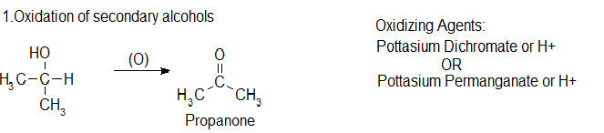
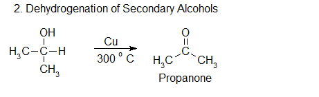
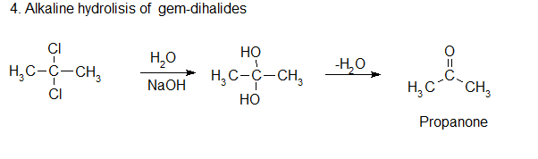

Secondary alcohols are oxidised to ketones. There is no further reaction which might complicate things. For example, if you heat the secondary alcohol propan-2-ol with sodium or potassium dichromate(VI) solution, acidified with dilute sulphuric acid, you get propanone formed. Playing around with the reaction conditions makes no difference whatsoever to the product. Using the simple version of the equation:
A mixture of propan-2-ol vapour and air is passed over silver catalyst heated at 3000C to produce propanone by oxidation. Passing, only propan-2-ol vapour over Cu catalyst, heated at 3000C can produce propanone by elimination of hydrogen.
 When one or both alkene carbons contain two alkyl groups, ozonolysis generates one or two ketones. The ozonolysis of 1,2‐dimethyl propene produces both 2‐propanone (a ketone) and ethanal (an aldehyde).
Ozonolysis is a method of oxidatively cleaving alkenes or alkynes using ozone (O3). The process allows for carbon-carbon double or triple bonds to be replaced by double bonds with oxygen. This reaction is often used to identify the structure of unknown alkenes by breaking them down into smaller, more easily identifiable pieces. Ozonolysis also occurs naturally and would break down repeated units used in rubber and other polymers. On an industrial scale, azelaic acid and pelargonic acids are produced from ozonolysis.
Ketones are obtained by the alkaline hydrolysis of gem dihalides in which the two halogen atoms are not attached to the terminal carbon atom.
